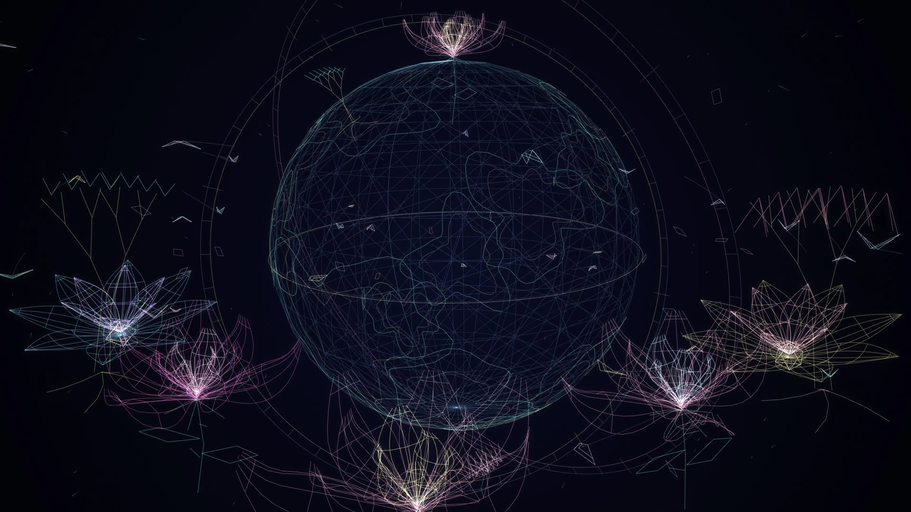

<meta charset="utf-8">
<meta name="viewport" content="width=device-width, initial-scale=1, viewport-fit=cover">
<title>Visual and Motion Atlas</title>
<meta name="claude:viewport-fit-sides" content="cover">
<meta name="description" content="Visual and Motion Atlas: a field guide to how images move, from a single harmonic to a living world.">
<link rel="preconnect" href="https://fonts.googleapis.com">
<link rel="preconnect" href="https://fonts.gstatic.com" crossorigin>
<link rel="stylesheet" href="https://fonts.googleapis.com/css2?family=Cormorant+Garamond:ital,wght@0,300;0,400;1,300;1,400&family=Manrope:wght@400;500;600&family=JetBrains+Mono:wght@400;500&display=swap">
<style>
  /* Layout: one full-bleed cinema plate. Copy sits on the dark left third,
     the film's own chapters run along the foot as an atlas plate index. */
  :root {
    color-scheme: dark;
    --void: #02040b;          /* the film's background */
    --ink: #eef2f8;           /* primary text */
    --ink-dim: #a8b3c7;       /* secondary text, blue-biased grey */
    --rule: rgba(190, 210, 240, 0.18);
    --ice: #7dd3fc;           /* Plate I  — harmonics */
    --mint: #6ee7b7;          /* Plate II — specimens */
    --rose: #fda4af;          /* Plate III — dimension */
    --gold: #fde68a;          /* Plate IV — biosphere */
    --plate: var(--ice);      /* current chapter colour, set by script */

    --f-display: "Cormorant Garamond", "Cormorant", Garamond, "Times New Roman", serif;
    --f-body: "Manrope", "Segoe UI", system-ui, sans-serif;
    --f-mono: "JetBrains Mono", ui-monospace, "SFMono-Regular", Menlo, monospace;

    --gutter: clamp(16px, 4.5vw, 72px);
  }

  * { box-sizing: border-box; }
  html, body { background: var(--void); color: var(--ink); }
  body { font-family: var(--f-body); font-size: 15px; line-height: 1.55; -webkit-font-smoothing: antialiased; }

  /* ---------- HERO FRAME ---------- */
  .hero {
    position: relative;
    isolation: isolate;
    min-height: clamp(640px, 100svh, 1000px);
    display: grid;
    grid-template-rows: auto 1fr auto;
    overflow: hidden;
    background: var(--void);
  }

  .film, .film video, .film img {
    position: absolute; inset: 0; width: 100%; height: 100%;
    object-fit: cover; object-position: 58% 50%;
  }
  .film { z-index: -2; }
  .film video { opacity: 0; transition: opacity 1.6s ease; }
  .film.is-playing video { opacity: 1; }

  /* Scrims keep copy readable without hiding the globe */
  .hero::before {
    content: ""; position: absolute; inset: 0; z-index: -1; pointer-events: none;
    background:
      linear-gradient(90deg, rgba(2,4,11,0.92) 0%, rgba(2,4,11,0.72) 28%, rgba(2,4,11,0.18) 55%, rgba(2,4,11,0) 70%),
      linear-gradient(180deg, rgba(2,4,11,0.75) 0%, rgba(2,4,11,0) 18%, rgba(2,4,11,0) 62%, rgba(2,4,11,0.94) 100%);
  }
  /* Fine survey graticule over the footage */
  .hero::after {
    content: ""; position: absolute; inset: 0; z-index: -1; pointer-events: none;
    background-image:
      linear-gradient(var(--rule) 1px, transparent 1px),
      linear-gradient(90deg, var(--rule) 1px, transparent 1px);
    background-size: 120px 120px;
    opacity: 0.16;
    mask-image: radial-gradient(ellipse at 20% 50%, #000 0%, transparent 65%);
    -webkit-mask-image: radial-gradient(ellipse at 20% 50%, #000 0%, transparent 65%);
  }

  .inner {
    padding-left: max(var(--gutter), env(safe-area-inset-left, 0px));
    padding-right: max(var(--gutter), env(safe-area-inset-right, 0px));
  }

  /* ---------- NAV ---------- */
  .nav {
    display: flex; align-items: center; justify-content: space-between; gap: 24px;
    padding-block: 26px;
  }
  .mark { display: flex; align-items: center; gap: 12px; color: var(--ink); text-decoration: none; }
  .mark svg { width: 30px; height: 30px; flex: none; }
  .mark span { font-family: var(--f-mono); font-size: 11.5px; letter-spacing: 0.22em; text-transform: uppercase; line-height: 1.25; }
  .mark span b { font-weight: 500; color: var(--ink); }
  .mark span i { font-style: normal; color: var(--ink-dim); }

  .links { display: flex; align-items: center; gap: 30px; list-style: none; margin: 0; padding: 0; }
  .links a {
    color: var(--ink-dim); text-decoration: none; font-size: 13.5px; font-weight: 500;
    letter-spacing: 0.02em; transition: color .2s ease;
  }
  .links a:hover { color: var(--ink); }
  .links .cta-sm {
    color: var(--ink); border: 1px solid var(--rule); padding: 9px 16px; border-radius: 999px;
    backdrop-filter: blur(10px); -webkit-backdrop-filter: blur(10px); background: rgba(10,16,30,0.35);
  }
  .links .cta-sm:hover { border-color: var(--plate); }

  /* ---------- COPY ---------- */
  .copy {
    align-self: center;
    max-width: 760px;
    padding-block: 40px 56px;
    display: grid; gap: 28px;
  }
  .eyebrow {
    display: flex; align-items: center; gap: 14px;
    font-family: var(--f-mono); font-size: 11.5px; letter-spacing: 0.2em; text-transform: uppercase;
    color: var(--plate); transition: color 1.2s ease;
  }
  .eyebrow::before { content: ""; width: 36px; height: 1px; background: currentColor; }

  h1 {
    margin: 0;
    font-family: var(--f-display); font-weight: 300;
    font-size: clamp(54px, 9.2vw, 148px);
    line-height: 0.86; letter-spacing: -0.025em;
    text-wrap: balance;
  }
  h1 .ln { display: block; }
  h1 em {
    font-style: italic; font-weight: 300;
    color: transparent;
    background: linear-gradient(100deg, var(--ice), var(--mint) 35%, var(--gold) 65%, var(--rose));
    -webkit-background-clip: text; background-clip: text;
    background-size: 220% 100%;
    animation: iridesce 14s ease-in-out infinite alternate;
  }
  h1 .amp { font-style: italic; font-weight: 300; color: var(--ink-dim); padding-inline: 0.04em; }
  @keyframes iridesce { from { background-position: 0% 50%; } to { background-position: 100% 50%; } }

  .lede {
    margin: 0; max-width: 34em;
    font-size: clamp(16px, 1.25vw, 18.5px); line-height: 1.6; color: var(--ink-dim);
  }
  .lede strong { color: var(--ink); font-weight: 500; }

  .actions { display: flex; flex-wrap: wrap; align-items: center; gap: 14px 22px; }
  .btn {
    display: inline-flex; align-items: center; gap: 12px;
    font: 600 14px/1 var(--f-body); letter-spacing: 0.02em;
    padding: 16px 24px; border-radius: 999px; text-decoration: none; cursor: pointer;
    border: 1px solid transparent; transition: transform .25s ease, background .25s ease, border-color .25s ease;
  }
  .btn-primary { background: var(--ink); color: var(--void); }
  .btn-primary:hover { transform: translateY(-1px); background: #fff; }
  .btn-primary svg { transition: transform .25s ease; }
  .btn-primary:hover svg { transform: translateX(3px); }
  .btn-ghost { background: transparent; color: var(--ink); border-color: var(--rule); }
  .btn-ghost:hover { border-color: var(--plate); }
  .btn svg { width: 16px; height: 16px; }

  .formula {
    font-family: var(--f-mono); font-size: 12px; color: var(--ink-dim); letter-spacing: 0.04em;
    display: flex; gap: 10px; align-items: baseline; flex-wrap: wrap;
  }
  .formula var { font-style: normal; color: var(--ink); }

  /* ---------- PLATE INDEX (film chapters) ---------- */
  .foot { padding-block: 0 28px; display: grid; gap: 18px; }
  .meta {
    display: flex; justify-content: space-between; align-items: center; gap: 16px; flex-wrap: wrap;
    font-family: var(--f-mono); font-size: 11px; letter-spacing: 0.16em; text-transform: uppercase; color: var(--ink-dim);
  }
  .meta .tc { font-variant-numeric: tabular-nums; color: var(--ink); }
  .meta .ctl {
    display: inline-flex; align-items: center; gap: 10px;
    background: none; border: 1px solid var(--rule); color: var(--ink);
    font: inherit; letter-spacing: inherit; text-transform: inherit;
    padding: 7px 12px; border-radius: 999px; cursor: pointer;
  }
  .meta .ctl:hover { border-color: var(--plate); }
  .meta .ctl svg { width: 10px; height: 10px; }
  .meta-left { display: flex; gap: 18px; align-items: center; flex-wrap: wrap; }

  .plates {
    list-style: none; margin: 0; padding: 0;
    display: grid; grid-template-columns: repeat(4, minmax(0, 1fr)); gap: 0;
    border-top: 1px solid var(--rule);
  }
  .plate {
    --c: var(--ice);
    position: relative; min-width: 0;
    display: grid; gap: 6px; padding: 16px 18px 4px 0;
    background: none; border: 0; color: inherit; text-align: left; cursor: pointer; font: inherit;
    opacity: 0.55; transition: opacity .5s ease;
  }
  .plate + .plate { padding-left: 18px; border-left: 1px solid var(--rule); }
  .plate:hover, .plate[aria-current="true"] { opacity: 1; }
  .plate .bar { position: absolute; top: -1px; left: 0; height: 1px; width: 0; background: var(--c); box-shadow: 0 0 10px var(--c); }
  .plate[aria-current="true"] .bar { width: var(--p, 0%); }
  .plate .no { font-family: var(--f-mono); font-size: 10.5px; letter-spacing: 0.2em; color: var(--c); }
  .plate .name { font-family: var(--f-display); font-style: italic; font-size: clamp(19px, 1.7vw, 24px); line-height: 1.1; }
  .plate .desc { font-size: 12.5px; color: var(--ink-dim); line-height: 1.45; }
  .plate:nth-child(1) { --c: var(--ice); }
  .plate:nth-child(2) { --c: var(--mint); }
  .plate:nth-child(3) { --c: var(--rose); }
  .plate:nth-child(4) { --c: var(--gold); }

  a:focus-visible, button:focus-visible { outline: 2px solid var(--plate); outline-offset: 3px; border-radius: 6px; }

  /* ---------- LOAD SEQUENCE (ends in the visible resting state) ---------- */
  @media (prefers-reduced-motion: no-preference) {
    .rise { animation: rise 1.1s cubic-bezier(.2,.7,.1,1) both; }
    .d1 { animation-delay: .15s } .d2 { animation-delay: .3s } .d3 { animation-delay: .45s }
    .d4 { animation-delay: .65s } .d5 { animation-delay: .85s } .d6 { animation-delay: 1.05s }
    @keyframes rise { from { opacity: 0; transform: translateY(18px); filter: blur(6px); } to { opacity: 1; transform: none; filter: none; } }
  }
  @media (prefers-reduced-motion: reduce) {
    h1 em { animation: none; }
    .film video { transition: none; }
  }

  /* ---------- CINEMA MODE ---------- */
  .hero.cinema .copy, .hero.cinema .nav .links, .hero.cinema::before, .hero.cinema::after { opacity: 0; pointer-events: none; }
  .hero .copy, .hero .nav .links, .hero::before, .hero::after { transition: opacity .8s ease; }

  /* ---------- NARROW ---------- */
  @media (max-width: 900px) {
    .links li:not(:last-child) { display: none; }
    .hero::before {
      background: linear-gradient(180deg, rgba(2,4,11,0.7) 0%, rgba(2,4,11,0.2) 22%, rgba(2,4,11,0.55) 50%, rgba(2,4,11,0.96) 82%);
    }
    .copy { align-self: end; padding-block: 24px 32px; }
    .plates { grid-template-columns: repeat(2, minmax(0, 1fr)); }
    .plate:nth-child(3) { padding-left: 0; border-left: 0; }
    .plate:nth-child(n+3) { border-top: 1px solid var(--rule); }
    .plate .desc { display: none; }
  }
  @media (max-width: 480px) {
    .mark span { font-size: 10.5px; letter-spacing: 0.18em; }
    .formula { display: none; }
    .btn { padding: 14px 20px; }
  }
</style>

<section class="hero" id="hero" aria-label="Visual and Motion Atlas">
  <div class="film" id="film" aria-hidden="true">
    
    <video id="reel" muted playsinline loop preload="auto">
      <source src="assets/genesis-hero-720.mp4" type="video/mp4" media="(max-width: 900px)">
      <source src="assets/genesis-hero-1080.mp4" type="video/mp4">
      <source src="assets/genesis-hero.webm" type="video/webm">
    </video>
  </div>

  <header class="inner">
    <nav class="nav" aria-label="Primary">
      <a class="mark rise" href="#hero" aria-label="Visual and Motion Atlas, home">
        <svg viewBox="0 0 30 30" fill="none" aria-hidden="true">
          <circle cx="15" cy="15" r="13.5" stroke="currentColor" stroke-opacity=".55"/>
          <ellipse cx="15" cy="15" rx="5.5" ry="13.5" stroke="currentColor" stroke-opacity=".55"/>
          <path d="M1.5 15h27" stroke="currentColor" stroke-opacity=".55"/>
          <circle cx="15" cy="15" r="7" stroke="#7dd3fc"/>
          <path d="M15 15 L20 10.2" stroke="#fde68a"/>
          <circle cx="20" cy="10.2" r="1.6" fill="#fde68a"/>
        </svg>
        <span><b>Visual &amp; Motion</b><br><i>Atlas</i></span>
      </a>
      <ul class="links rise d1">
        <li><a href="#plates">Plates</a></li>
        <li><a href="#studies">Studies</a></li>
        <li><a href="#index">Index of motion</a></li>
        <li><a class="cta-sm" href="#enter">Enter the atlas</a></li>
      </ul>
    </nav>
  </header>

  <div class="inner">
    <div class="copy">
      <p class="eyebrow rise d1" id="eyebrow">Plate I &middot; Harmonics</p>
      <h1 class="rise d2">
        <span class="ln">Visual <span class="amp">&amp;</span></span>
        <span class="ln"><em>Motion</em> Atlas</span>
      </h1>
      <p class="lede rise d3">
        A field guide to how images move. Every plate traces one idea from its equation to its
        living form, the way <strong>140 spinning harmonics</strong> draw a planet, then grow it a garden.
      </p>
      <div class="actions rise d4">
        <a class="btn btn-primary" href="#enter" id="enter">
          Open the atlas
          <svg viewBox="0 0 16 16" fill="none" aria-hidden="true"><path d="M2 8h11M9 4l4 4-4 4" stroke="currentColor" stroke-width="1.5"/></svg>
        </a>
        <button class="btn btn-ghost" type="button" id="cinemaBtn" aria-pressed="false">
          <svg viewBox="0 0 16 16" fill="none" aria-hidden="true"><rect x="1.5" y="3.5" width="13" height="9" rx="1.5" stroke="currentColor"/><path d="M6.5 6v4l3.5-2z" fill="currentColor"/></svg>
          <span>Watch the film</span>
        </button>
      </div>
      <p class="formula rise d5" aria-label="Fourier series used to draw the film">
        <var>f(t) = &Sigma; c<sub>k</sub> e<sup>ik&omega;t</sup></var>
        <span>&middot; the rule behind every line in this film</span>
      </p>
    </div>
  </div>

  <footer class="inner foot rise d6" id="plates">
    <div class="meta">
      <div class="meta-left">
        <span>Genesis &middot; Plates I&ndash;IV</span>
        <span class="tc" id="tc" aria-live="off">00:00 / 00:40</span>
      </div>
      <button class="ctl" type="button" id="playBtn" aria-label="Pause the film">
        <svg viewBox="0 0 10 10" aria-hidden="true" id="playIcon"><rect x="1" y="1" width="3" height="8" fill="currentColor"/><rect x="6" y="1" width="3" height="8" fill="currentColor"/></svg>
        <span id="playLabel">Pause</span>
      </button>
    </div>
    <ol class="plates" id="plateList">
      <li><button class="plate" type="button" data-t="0" aria-current="true"><span class="bar"></span><span class="no">PLATE I &middot; 0:00</span><span class="name">Harmonics</span><span class="desc">Epicycles trace a planet from frequency.</span></button></li>
      <li><button class="plate" type="button" data-t="10"><span class="bar"></span><span class="no">PLATE II &middot; 0:10</span><span class="name">Specimens</span><span class="desc">Oak, rose, willow, stag and bird drawn in light.</span></button></li>
      <li><button class="plate" type="button" data-t="20"><span class="bar"></span><span class="no">PLATE III &middot; 0:20</span><span class="name">Dimension</span><span class="desc">Flat blueprints rise into a wireframe garden.</span></button></li>
      <li><button class="plate" type="button" data-t="30"><span class="bar"></span><span class="no">PLATE IV &middot; 0:30</span><span class="name">Biosphere</span><span class="desc">Flocks orbit a living world, then return to the void.</span></button></li>
    </ol>
  </footer>
</section>

<script>
(() => {
  const hero = document.getElementById('hero');
  const film = document.getElementById('film');
  const reel = document.getElementById('reel');
  const tc = document.getElementById('tc');
  const eyebrow = document.getElementById('eyebrow');
  const plates = [...document.querySelectorAll('.plate')];
  const playBtn = document.getElementById('playBtn');
  const playLabel = document.getElementById('playLabel');
  const playIcon = document.getElementById('playIcon');
  const cinemaBtn = document.getElementById('cinemaBtn');
  const root = document.documentElement;

  const CHAPTERS = [
    { name: 'Harmonics', no: 'I',   color: '--ice'  },
    { name: 'Specimens', no: 'II',  color: '--mint' },
    { name: 'Dimension', no: 'III', color: '--rose' },
    { name: 'Biosphere', no: 'IV',  color: '--gold' }
  ];
  const LEN = 10, TOTAL = 40;
  const reduce = matchMedia('(prefers-reduced-motion: reduce)').matches;
  let current = -1;

  const fmt = s => {
    s = Math.max(0, Math.floor(s));
    return String(Math.floor(s / 60)).padStart(2, '0') + ':' + String(s % 60).padStart(2, '0');
  };

  function setChapter(i) {
    if (i === current) return;
    current = i;
    const c = CHAPTERS[i];
    eyebrow.textContent = `Plate ${c.no} · ${c.name}`;
    root.style.setProperty('--plate', `var(${c.color})`);
    plates.forEach((p, k) => p.setAttribute('aria-current', k === i ? 'true' : 'false'));
  }

  function tick() {
    const t = reel.currentTime || 0;
    const i = Math.min(3, Math.floor(t / LEN));
    setChapter(i);
    plates[i].style.setProperty('--p', `${((t - i * LEN) / LEN) * 100}%`);
    tc.textContent = `${fmt(t)} / ${fmt(TOTAL)}`;
    if (!reel.paused) requestAnimationFrame(tick);
  }

  function syncButton() {
    const paused = reel.paused;
    playLabel.textContent = paused ? 'Play' : 'Pause';
    playBtn.setAttribute('aria-label', paused ? 'Play the film' : 'Pause the film');
    playIcon.innerHTML = paused
      ? '<path d="M2 1l7 4-7 4z" fill="currentColor"/>'
      : '<rect x="1" y="1" width="3" height="8" fill="currentColor"/><rect x="6" y="1" width="3" height="8" fill="currentColor"/>';
  }

  reel.addEventListener('playing', () => { film.classList.add('is-playing'); syncButton(); requestAnimationFrame(tick); });
  reel.addEventListener('pause', () => { syncButton(); tick(); });
  reel.addEventListener('seeked', tick);

  playBtn.addEventListener('click', () => { reel.paused ? reel.play().catch(() => {}) : reel.pause(); });

  plates.forEach(p => p.addEventListener('click', () => {
    reel.currentTime = Number(p.dataset.t) + 0.05;
    film.classList.add('is-playing');
    reel.play().catch(() => {});
    tick();
  }));

  cinemaBtn.addEventListener('click', () => {
    const on = hero.classList.toggle('cinema');
    cinemaBtn.setAttribute('aria-pressed', String(on));
    cinemaBtn.querySelector('span').textContent = on ? 'Show the atlas' : 'Watch the film';
    if (on) {
      if (reel.currentTime > 1) reel.currentTime = 0;
      film.classList.add('is-playing');
      reel.play().catch(() => {});
    }
  });
  document.addEventListener('keydown', e => {
    if (e.key === 'Escape' && hero.classList.contains('cinema')) cinemaBtn.click();
  });

  // Pause off-screen to save battery; resume when the hero returns.
  let userPaused = false;
  playBtn.addEventListener('click', () => { userPaused = reel.paused; });
  new IntersectionObserver(([e]) => {
    if (!e.isIntersecting) reel.pause();
    else if (!userPaused && !reduce) reel.play().catch(() => {});
  }, { threshold: 0.15 }).observe(hero);

  setChapter(0);
  if (reduce) {
    userPaused = true;
    syncButton();
  } else {
    reel.play().catch(() => syncButton());
  }
})();
</script>
